La Reproduction
Lors de la reproduction sexuée un individu formant un zygote diploïde est créé par la fixions de deux gamètes haploïde (spermatozoïde et ovule).
D’un point de vue adulative des mammifères placentaire tous les développements embryonnaires se déroule dans les conduits génitaux (les voies génitaux) de l’organisme maternel.
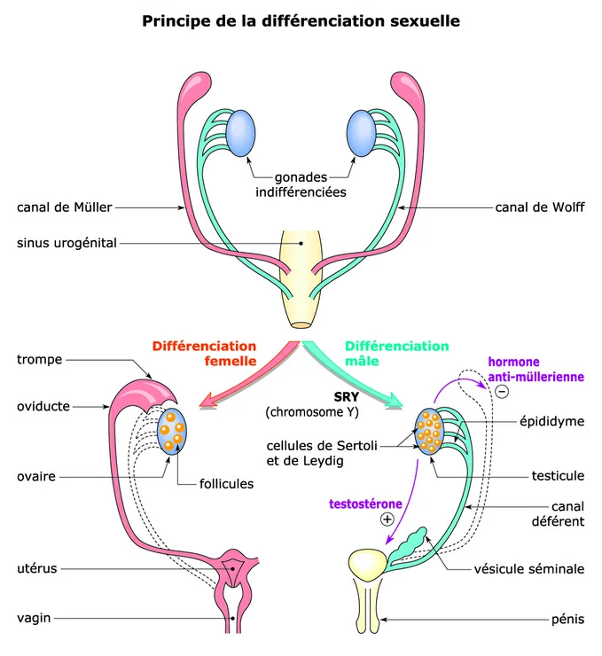
I – L’appareil génital Mâle :
Il renferme et constituer par
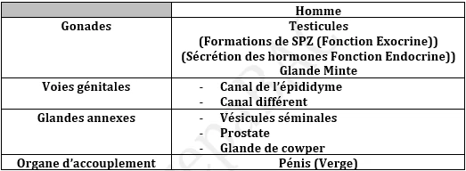
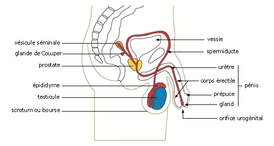
1 – Testicule : chez l’homme il existe deux testicules a l’intérieure dans un membrane qui s’appelle Bource (Scrotum) qui représente un milieu convenable de la formation des SPZs selon la température chaque testicule est partagé en 250 lobules et chaque lobule renferme deux ou trois tubes séminifères, chaque tube séminifère forme les SPZs après la puberté et entre les tubes séminifères existe un tissu interstitiel formé par les cellules de leydig responsable de secrété d’un hormone Testostérone qui assure les caractères sexuelles secondaires chez l’homme.
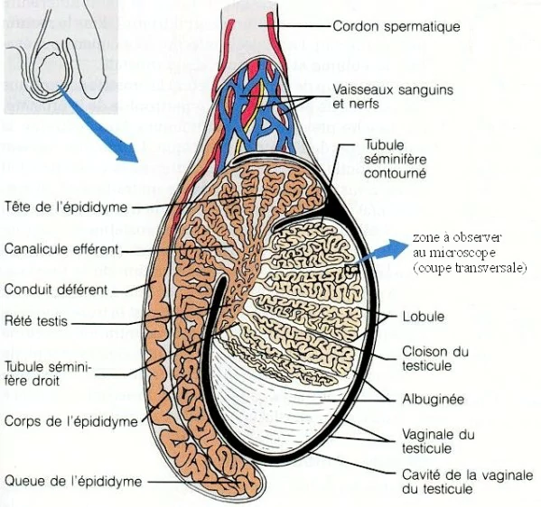
2 – Les voies génitales : sont les épididymes, spérmiducte (canal diffèrent), urètre ; les rôles de ces voies génitaux est l’évacuation des SPZs à l’extérieur.
3 – Pénis : organe de copulation.
4 – Les organes annexes : sont les vésicules séminales et prostate et glande couper, leurs rôles est la production du liquide séminale qui renferme des substances nutritives dans lequel baignent les SPZs.
+ Les fonctions de l’appareil génitale mâle :
A – Fonction de sécrétion externe :
- Structure du testicule : coupe transversale du testicule montre trois tubes séminifères et un tissu interstitiel formé par les cellules de leydig qui secrètent la Testostérone, dans les tubes séminifères on distingue plusieurs cellules qui représente les étapes de la spermatogenèse (spermatogonie, spermatocyte I, spermatocyte II, spermatide et SPZ) et les cellules de sertolie responsable de la nutrition de SPZ et la sécrétion d’un hormone Inhibine.
+ Remarque :
1- La durée de formation de la SPZ est de 74 jours.
2- La spermatogénèse ne commence qu’après la puberté.
3- Pour que le SPZ soit capable a fécondé l’ovule il faut qu’il passe par l’épididyme
4- La présence de la lumière dans les tubes séminifères n’existe qu’après la puberté.
5- L’épididyme contient le stockage de SPZ.
6- L’éjaculation humain renferme 9/10 liquide séminal et 1/10 de SPZ.
7- Il existe deux types de SPZ x et y.
x plus grand que y et y plus rapide que x.
- Sécrétion des glandes annexes : sont les vésicules séminales, prostate, glande de couper ; leurs rôles sont la sécrétion des substances (sperme) dans les voies génitales.
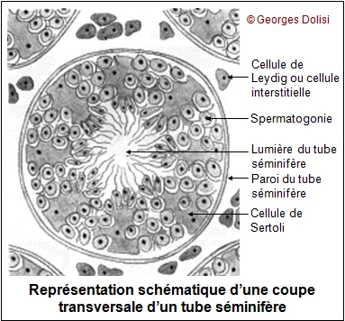
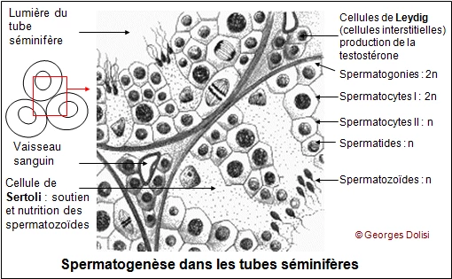
B – Fonction de sécrétion interne :
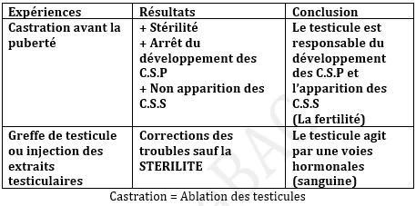
+ Conclusion : Les testicules agissent par deux hormones
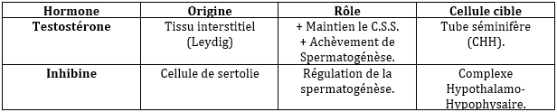
C – Régulation de la fonction de l’appareil génital Mâle :
- Rôle du complexe Hypothalamo-Hypophysaire :
1- Rôle de l’hypophyse :
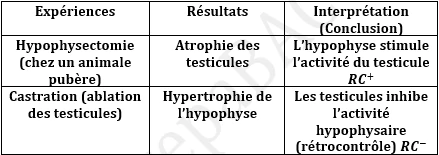
+ Conclusion : L’hypophyse agit sur les testicules par deux hormones :
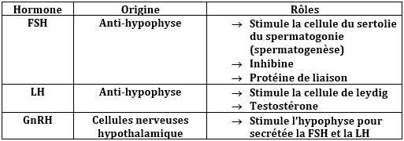
2- Rôle de l’hypothalamus :
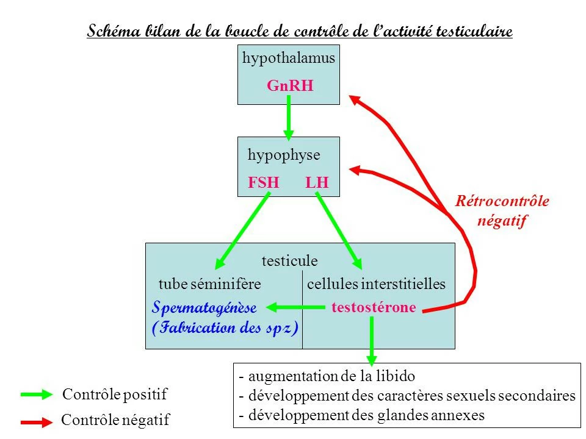
+ Conclusion : l’hypothalamus agit sur l’hypophyse par hormone GnRH.
D – Rétrocontrôles testiculaires :
+ Conclusion : les testicules contrôlent les fonctions de l’hypophyse par deux hormones :
N.B : On utilise une hormone radioactive pour préciser ses cellules cibles, c’est-à-dire préciser la localisation de ces récepteurs.
Remarque :
+ GnRH : est un neurohormone (secrète par une cellule nerveuse), elle est aussi une H. de libération (provoque la libération de FSH et LH).
+ Gn = Gonadostimuline (FSH et LH)
Les hormones du CHH sont de nature protéique, donc à récepteur externe.
+ Une hormone : est une substance secrétée en faible dose à une glande endocrine transportée par le sang et agit sur les cellules cibles.
- Testostérone : contrôle la quantité de LH.
- Inhibine : Contrôle la quantité de FSH.
- L’augmentation de la testostérone provoque une diminution de la quantité de LH rétrocontrôle négatif.
- L’augmentation de l’inhibine provoque une diminution de la quantité de FSH rétrocontrôle négatif et l’hypophyse agit sur les testicules par les gonadostimulines FSH et LH.
+ La relation entre l’hypothalamus et l’hypophyse et les testicules est appelé FEEDBACK.
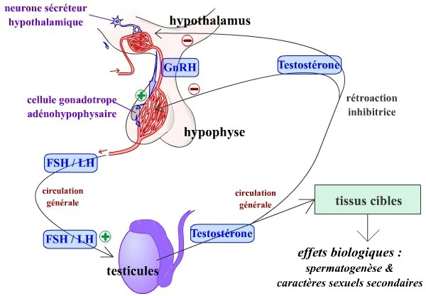
+ Remarque :
- Parabiose : est une liaison sanguine entre deux animaux l’un est castré et l’autre hypophysectomie.
- Les conditions qui augmentent la fécondité de SPZ sont :
a- Le passage par l’épididyme.
b- La durée de SPZ dans l’épididyme.
c- La présence des testicules ou testostérones.
d- La présence de l’hypophyse ou hormone LH.
- Les caractères sexuels secondaires : sont des caractères qui n’apparaissent qu’après la puberté sous l’action d’un hormone testostérone, parmi les exemples de ces caractères :
a- La pilosité.
b- Forme musculaire.
c- Aggravation de la voix.
d- Ejaculation ETC…
II – L’appareil génital Femelle :
Il renferme et constituer par
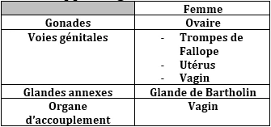
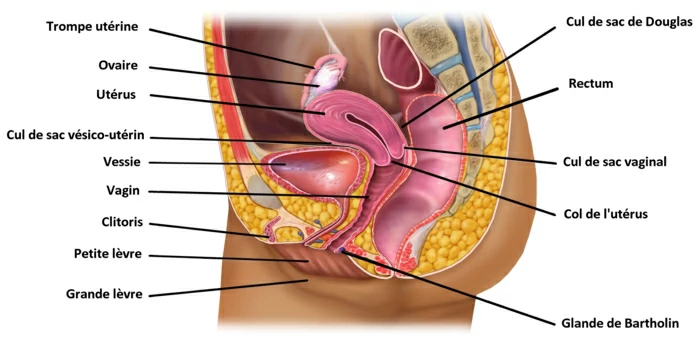
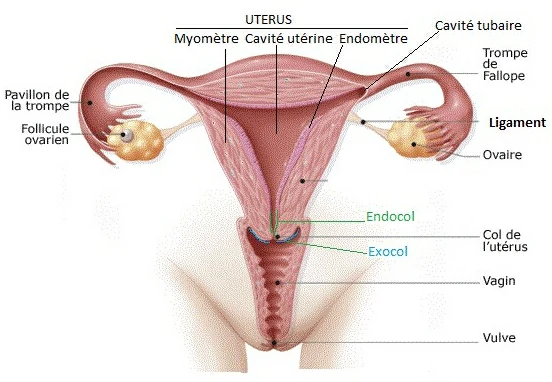
1 – Ovaire : les mammifères dont la femme possède deux ovaires de forme ovale situer de chaque côte de l’utérus, l’ovaire comprend deux zones :
- Zone médullaire : au centre qui renferme les capillaires sanguins pour la nutrition des tissus ovariennes.
- Zone corticale : renferme les follicules et le corps jaune.
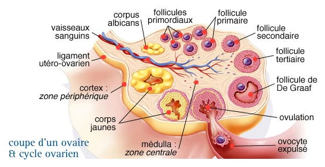
2 – Les voies génitales : renferment deux pavillons et deux trompes ( oviducte) leurs rôles est l’évacuation des gamètes femelles.
3 – Utérus : former par deux muscles ( myomètre et endomètre ou muqueuse), l’utérus est un organe de gestation.
4 – Vagin : organe copulateur.
- Les fonctions de l’appareil génital féminine :
A – Structure de l’ovaire : la structure de l’ovaire montre l’existence de deux zones
- Zone médullaire.
- Zone corticale : riche en follicule (ovocyte I entouré par les cellules folliculaires), les follicules sont :
a- Follicule primordial : caractérisé par une ovocyte I entourer par quelque cellule folliculaire.
b- Follicule primaire : plus grand que les follicules primordiaux et entourer par de couche des cellules folliculaires.
c- Follicule secondaire : caractérisé par deux thèque externe et interne.
d- Follicule tertiaire (cavitaire) : formé par un ovocyte I entourer par une cavité et deux thèques.
e- Follicule mûr (dégrafé) : caractérisé par la présence d’une grande cavité folliculaire (Antrum).
f- Corps jaune : au moment de l’ovulation le follicule mûr s’éclate pour libérer une ovocyte II bloqué en métaphase II, le reste de follicule mûr (follicule rompu) se transforme progressivement en corps jaune former par des cellules lutéiniques.
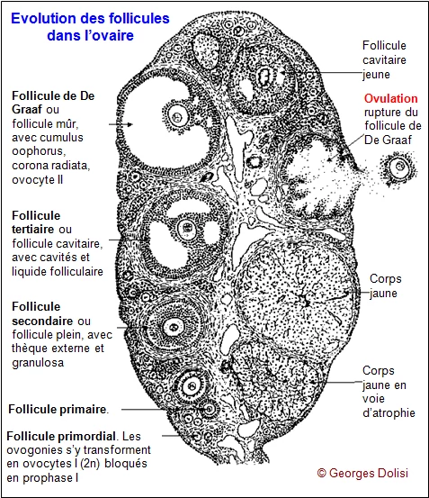
Remarques :
1 – à la naissance tous les follicules sont primordiaux et tous les cellules sont des OVI bloquée en prophase I.
2 – Les cellules folliculaire bloque la méiose des ovocytes par la synthèse d’une protéine appelé AMPc.
3 – Le follicule cavitaire, mûr, ovulation et la corps jaune caractérise la puberté.
4 – L’ovulation est l’éclatement d’un follicule mûr et la libération d’un ovocyte II dans la trompe, suite à l’éclatement le follicule rompu forme un Corps Jaune.
- En cas de Non-fécondation le corps jaune est cyclique et régresse en fin du cycle.
- En cas de fécondation le corps jaune est gestatif et dure les deux premiers mois de la grossesse.
5 – La régression du corps jaune donne une cicatrice des nombres de cicatrices égale aux nombres du corps jaune.
B – Rôle de l’ovaire avant la puberté:
- Ovogenèse : commence dans l’ovaire embryonnaire par la formation de toute les stockages d’ovogonies et après l’accroissement chaque ovogonie devient une ovocyte I.
- Folliculogenèse : chaque ovocyte I est entouré par des cellules folliculaires devient en follicule primordial et primaire mais le reste de follicule sont introuvable avant la puberté.
C – Rôle de l’ovaire après la puberté :
Le cycle menstruel est l’ensemble de phénomène physiologique de la femme préparent l’organisme a une éventuelle fécondation et survenant les phases suivantes de façon périodique ( cycle ovarien, cycle utérin, cycle thermique et cycle hormonale…). La durée du cycle sexuel est 28 jours chez les femmes et de 5 jours chez les rattes et de 21 jours chez les caches.
1- Cycle ovarien : composé de
- Phase folliculaire : marquer par évolution de follicule secondaire et tertiaire et mûr (entre 1ére et 14éme jours).
- Phénomène de l’ovulation : rupture de la follicule mûr suivi de l’expulsion d’une ovocyte II et GPI dans les trompes. L’ovulation est provoquée par l’hormone LH.
Remarque :
L’ovulation peut-être spontanée exemple chez les femmes et peut-être provoquer exemple chez la ratte ou le lapin.
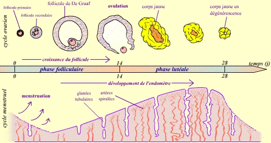
- Phase lutéinique : entre 14 et 28éme jours période du cycle ovarien après l’ovulation durant lequel les cellules folliculaires se transforment en corps jaune après l’éclatement de follicule mûr. Le corps jaune secrète deux hormones ovariens sont Œstrogène et Progestérone. S’il y a une fécondation le corps jaune se développe et s’il n’y a pas on constate une injection du corps jaune et la fin du cycle sexuel.
2- Cycle utérin : L’ensemble de modification utérin en réponse au différente hormone produite par les ovaires durant :
- Phase folliculaire ( post-menstruelle) : marquer par la formation des récepteurs de progestérone et muqueuse peu développé et l’augmentation de contraction de utérins.
- Phase lutéinique ( pré-menstruelle) : marquer par une grande augmentation de volume de la muqueuse et la formation des dentelles utérins et la silence utérine ( inhibition de contraction utérine) s’il n’y a pas de fécondation on remarque une régression du corps jaune et diminution de progestérone et l’augmentation de contraction utérin ce qui provoque la menstruation ( règle).
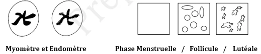
3- Cycle vaginale : toute les modifications qui affecte le vagin parallèlement avec les cycles utérins.
4- Cycle thermique : durant la phase folliculaire la température corporelle est inférieur à 37°C durant la phase lutéinique la température est supérieur à 37°C jour de l’ovulation marqué par une augmentation de température.
N.B : Les glandes ( Ovaires + Testicules) sont des glandes mixtes qui assures deux fonctions :
- Une Fonction Exocrine : La gamétogenèse ( Ovogenèse + Spermatogenèse).
- Une Fonction Endocrine : La sécrétion des hormones ( Les ovaires secrètes œstrogène et progestérone) et ( Les testicules secrètes Testostérone 3T et Inhibine).
+ Les Hormones Ovariennes :
- Œstrogène : Cette hormone est secrétée par les follicules pendant la phase folliculaire et corps jaune pendant la phase lutéale. ( Œstradiol = oe = oes = os).
- Progestérone : est secrétée par le corps jaune pendant la phase lutéale. ( Pr = prg = prog) ; elle est éliminée dans l’urine sous forme d’une substance appelée la Prégnandiol.
N.B : L’Œstrogène est éliminé aussi dans l’urine sous forme d’une substance appelée le Phénolsteriode.
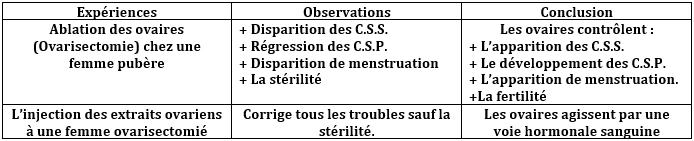
+ Conclusion : les ovaires agirent par deux hormones.
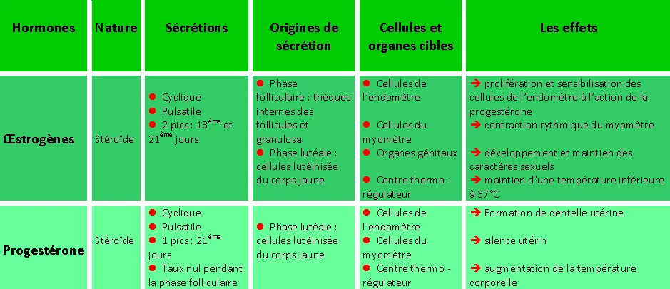
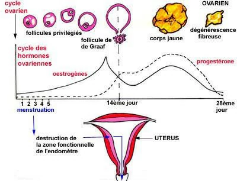
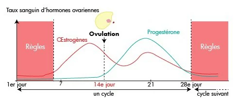
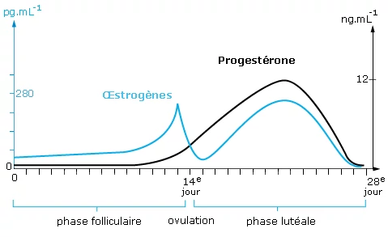
+ Remarque : l’œstrogène responsable de formation de récepteur de progestérone.
+ D’après notre connaissance on sait que l’oes stimule le développement de l’endomètre et que la progestérone stimule un grand développement de l’endomètre formations des dentelles utérines mais sans effet en absence d’œstradiol puis ce qui implique que l’œstradiol stimule la formation du récepteur pour la fixation de la progestérone.
+ Sachant qu’il existe une substance qui bloque l’action de la Progestérone il a des rôles valables sont :
- Elle s’occupe du récepteur de la progestérone.
- Elle détruite la progestérone. Et le substance est le RU486
D – Régulation de la fonction de l’appareil génital femelle :
a- Rôle du complexe Hypothalamo-Hypophysaire :
- Rôle de l’hypophyse : l’hypophyse agit sur les ovaires par les gonadostimulines.
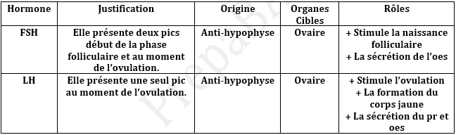
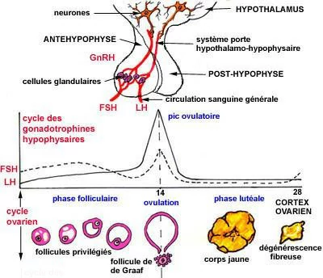
b- Rôle de l’hypothalamus : l’hypothalamus agit sur l’hypophyse par l’intermédiaire d’un hormone GnRH.
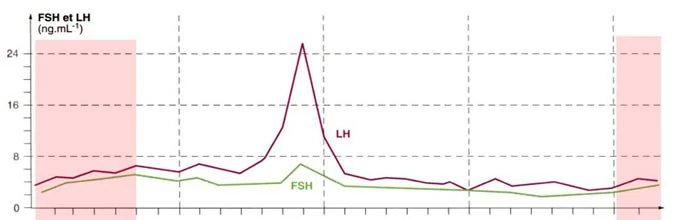
E – Rétro-contrôles ovarien sur le complexe hypothalamus hypophysaire.
+ Conclusion : les ovaires contrôlent la sécrétion des gonadostimulines par l’intermédiaire de deux hormones ovariennes. Œstrogène et Progestérone.
Il existe trois différents types des rétrocontrôles chez la femme normale :
+ L’injection d’une faible dose d’œstrogène bloque la sécrétion de la FSH et LH il s’agit d’un :
(Rétrocontrôle Négatif RC-).
+ L’injection d’une forte dose d’œstrogène stimule une forte sécrétion de FSH et LH il s’agit d’un :
(Rétrocontrôle Positif RC+).
+ L’injection d’un mélange des hormones ovariennes bloque la sécrétion des gonadostimulines il s’agit d’un :
(Rétrocontrôle Négatif RC-).
N.B : Si dans un exercice on parle sur des Hormones Ovariennes il s’agit de la Progestérone et Œstrogène et si c’est des Hormones Hypophysaire ou Gonadostimulines il s’agit de la FSH et LH.
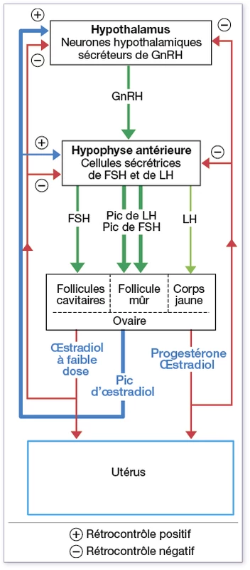
Remarque :
+ Parabiose : une relation entre deux animaux l’une Ovarisectomie et l’autre hypophysectomie.
Ménopause : âges de 45 et 55 ans marquer par :
- Fin de toutes les stockages ovocytes.
- Arrêt des cycles sexuels.
- Absence de menstruation.
- Diminution des hormones ovariennes.
- Augmentation de sécrétion des gonadostimulines.
- Hypertrophie de l’hypophyse.
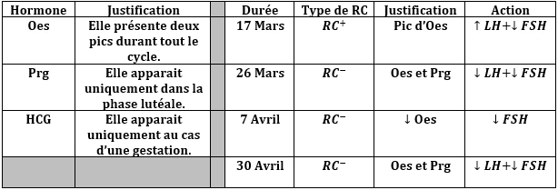
Le mécanisme hormonal de l’Ovulation est :
Secretion de FSH → Croissance folliculaire → Secretion d'oes → Pic d'oes → RC+ → Pic de LH
Ovulation
+ La Gestation (Grossesse) : c’est la période qui sépare entre la fécondation et l’accouchement elle dure chez la femme normale de 266 à 280 jours (38 à 40 semaines). Elle est divisée en deux périodes :
- La vie Embryonnaire : elle dure les deux premiers mois de la grossesse et caractérisée par la formation des organes de l’embryon.
- La vie Fœtale : du 3éme au 9éme mois de la grossesse elle est caractérisée par le développement des organes du fœtus. d’un point de vue nutritionnel, la grossesse est aussi divisée en deux parties :
- La vie libre de l’Embryon : dure de la 1ére semaine de la grossesse, pendant cette période l’embryon se nourrit de la cellule de la mère et s’agit de la sécrétion de la voie génitale.
+ De la fécondation à la Nidation :
N.B : Le pronucléus femelle ce cite toujours à côté du globule polaire.
La fécondation chez l’homme est la rencontre suivie la fusion un milieu liquide secrété par l’oviducte de deux gamètes (SPZ et Ovocyte II) ce rendez-vous à lieux en premier des trompes, chronologiquement la fécondation passe par des étapes :
- Attraction des gamètes.
- Pénétration d’un SPZ.
- Formation des pronucléus.
- Caryogamie (zygote).
L’œuf subit une série de division de la mitose pour la formation de blastocyte qui comprend deux organes :
- Bouton embryonnaire : l’origine des organes embryonnaires.
- Trophoblaste : l’origine des annexes embryonnaires (Placenta et Animus), il secrète des enzymes creuse la muqueuse pour la pénétration de zygote (Nidation) elle secrète aussi un hormone appelé HCGresponsable de développement du corps jaune et maintien de la nidation avant la formation du placenta. La nidation dure environ de 7 jours après la fécondation.
Remarques :
1- L’apparition de HCG dans l’urine et la disparition des cycles menstruelles et l’augmentation continue du taux d’œstrogène et progestérone sont des signes de la gestation (grossesse).
+ La gestation est caractérisée par :
- L’apparition de HCG dans l’urine.
- Sécrétion importante et constante d’oes et prg.
- Arrêt du cycle.
- Un RCG sur le C.H.H.
+ Le Placenta : est un organe d’échange entre la mère et le fœtus, il assure plusieurs rôles :
- Un rôle trophique : assure les échanges nutritionnelle.
- Un rôle protecteur : caractérisée par l’empêchement de rentrée des microbes et les anti-gènes.
- Un rôle endominien : caractérisée par la sécrétion des hormones HCG, Oes, Prg et HPL.
2- Source de nutrition de l’embryon durant les trois premiers mois de grossesse est l’ovocyte et après la source est le Placenta.
3- L’hypophysectomie n’a aucun effet sur le déroulement de la grossesse.
4- L’Ovarisectomie durant les trois premiers mois de la grossesse est avortable et après n’a aucun effet sur la grossesse.
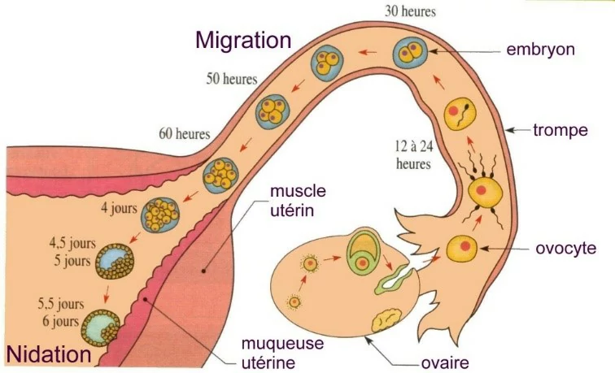
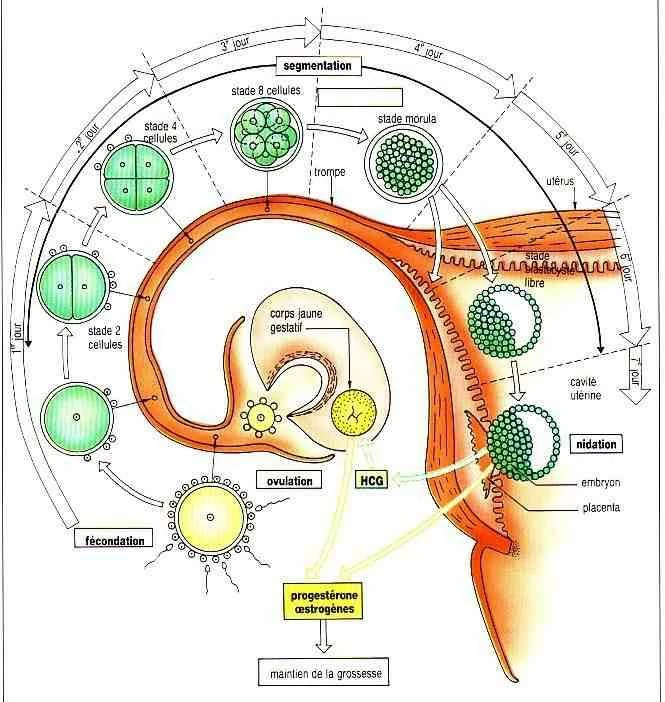
+ De la nidation à la parturition (accouchement) :
La gestation est une période de 270 jours durant laquelle :
a- Membrane amniotique : c’est une cavité qui entoure l’embryon et assure la protection mécanique de l’embryon.
b- Placenta : un organe d’échange a origine mixte liée avec l’embryon par un cardon ombilicale et assure deux rôles.
+ Glande endocrine : secrètent les hormones comme l’œstrogène et progestérone et HCG et GH.
+ Glande exocrine : qui représente une liaison sanguine entre le sang maternelle et le fœtus.
+ Parturition (accouchement) : résultat de contraction plus violente du muscle utérin, en fin la gestation la chute du taux sanguine de progestérone provoque que le muscle utérin commence spontanément a contracté et l’hypophyse de l’embryon secrète l’hormone ACTH qui agit sur les glandes surrénales pour la sécrétion d’un hormone cortisol responsable de la transformation de progestérone en œstrogène. Les muscles utérins secrète hormone Prostaglandine et l’hypophyse postérieur de la mère secrète l’hormone Ocytocine, ces hormones provoquent des violentes contractions utérines pour l’expulsion de l’embryon et ces annexes (accouchement)
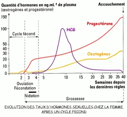
+ Lactation : est une période de la femme de mammifère qui se traduit par la sécrétion du lait par les glandes mammaires après l’accouchement durant la gestation les glandes mamelles se développent sans sécrétion du lait à cause de l’augmentation des hormones ovariennes et l’inhibition de sécrétion de Prolactine hypophysaire (responsable de la sécrétion du lait). Après l’accouchement et l’expulsion de placenta on remarque la diminution des hormones ovariennes et l’augmentation de sécrétion de Prolactine et production spontanée du lait après les premières semaines de l’accouchement la sécrétion du lait est issue d’un réflexe nerveux en le CHH et les glandes mamelles.
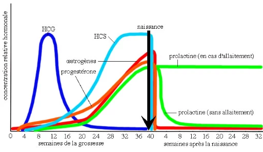
N.B :
La protection du lait est déterminée par deux facteurs :
- Quantité d’alimentation.
- La sécrétion de Prolactine (LTH).
+ La sécrétion de Prolactine bloque l’activité cyclique.
+ La progestérone bloque la sécrétion de Prolactine.
+ Méthode de Contraception :
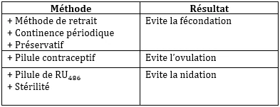
+ Certaines forme de stérilté :
La stérilité : c’est l’incapabilité de la procréation.
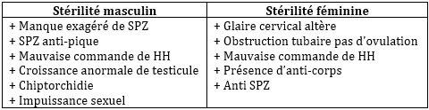
Autres cause de la Stérilité Chez la Femme :
• Dysfonctionnement des gonades.
• Anomalie des voies génitales.
• Anomalie des glandes annexes.
• Dysfonctionnement du C.H.H.
• Autres Facteurs…
Chez le mâle parmi les cause de la stérilité :
- L’azoospermie : C’est l’absence total des SPZs dans le sperme.
- L’oligospermie : C’est la production faible du SPZs.
- La teratospermie : C’est l’élévation des formes anti-piques des SPZs.
Plusieurs causes de la stérilité sont traitées par la FIVETE dont les principales étapes sont :
- Injection d’un analogue de GnRH = cycle articiel (contrôler le cycle)
- Injection de FSH = plusieurs follicules.
- Dosage de l’Oes = avoir des informations sur l’ovule.
- Injection de LH ou HCG.
N.B :
+ Les pilules combinées empêche l’ovulation et RU486 empêche la nidation.
+ La F.I.V.E.T.E (bébé éprouvette) : C’est la fécondation in vitro à la transfert d’embryon.
Une PMA « procréation médicalement assisté ».
La F.I.V.E.T.E : est un traitement de l’obstruction bilatérale des virus génitales (La trompe), elle se passe par plusieurs étapes :
- Le prélèvement des gamètes.
- La formation cellule œuf.
- La mise en culture de la cellule œuf pour la formation d’un embryon.
- L’implantation de l’embryon sur la muqueuse utérine pour la nidation.
+ Le Foie agit pour la destruction et stockage des hormones
Remarque :
• Date de l’Ovulation : c’est le début d’apparition de Prg 24h après le grand pic d’Oes.
• La date qui correspond le pic de LH 14éme jours.
• Le début du Menstruation c’est la date de disparition d’Oes et Prg
- Les observations de MARTIN :
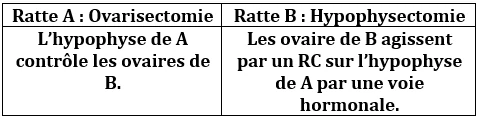
+ Hypertrophie de l’hypophyse de A : indique les hormones ovariennes de B agissent que au niveau de l’hypophyse de A RC- les hormones ovariennes (stéroïdiennes) ne transportent pas la PARABIOSE.
+ Hyperfonctionnement des ovaires de B : indique les ovaires ayants reçu une grande Qtt des gonadostimulines secrétées par l’hypophyse d’A les hormones hypophysaires (protéique) se transportent par la PARABIOSE.
- Les Jumeaux : sont caractérisées par la présence de plusieurs embryons dans l’utérus. Ils sont classés en deux sortent :
+ Les Vrais Jumeaux : ils résultent de la fécondation d’un seul ovule par un seul spermatozoïde.
+ Les Faux Jumeaux : ils résultent de la fécondation des ovules différentes par des spermatozoïdes différents dans ce cas le nombre de corps jaune gestatif égale au nombre d’embryon.
Remarque :
- Si le sexes des embryons sont différents il s’agit de faux jumeaux.
- Si le sexes des jumeaux sont identiques dans ce cas ils peuvent être des vrais ou des faux jumeaux.